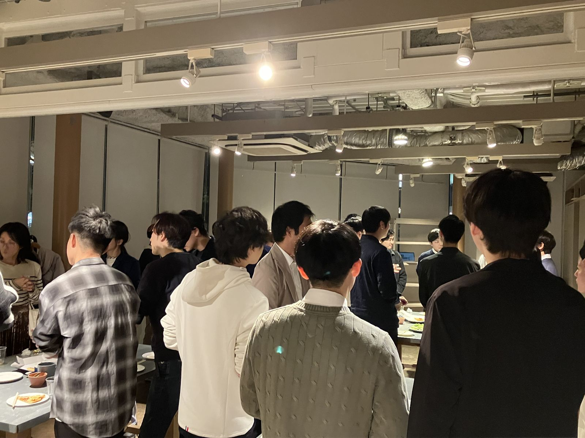
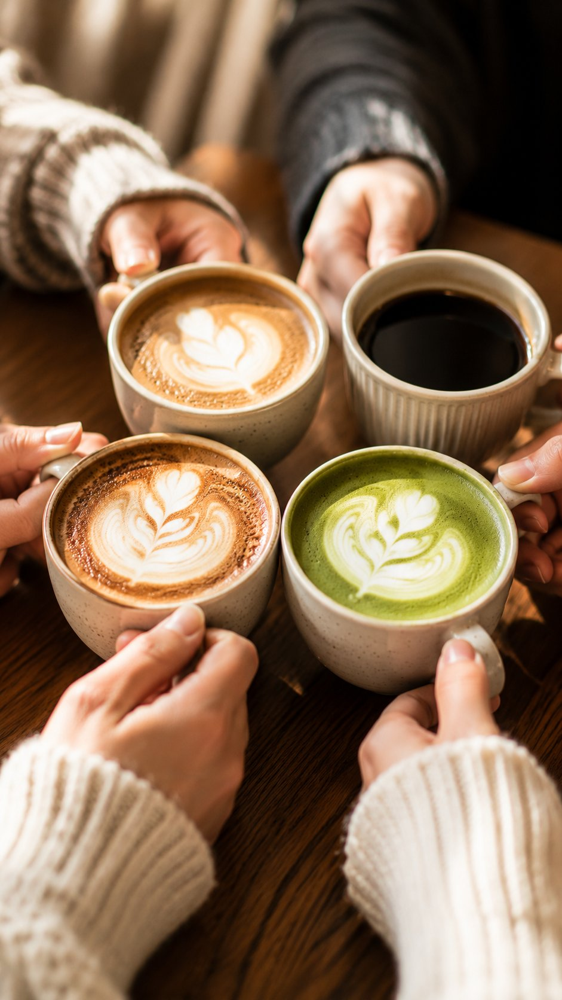
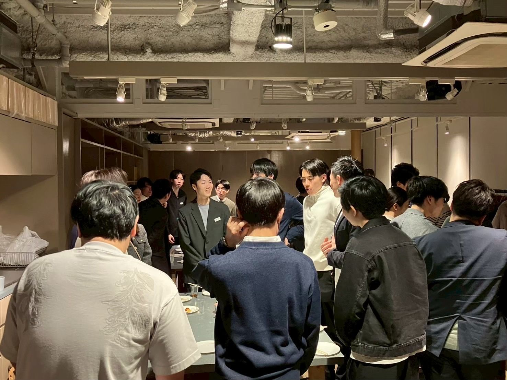
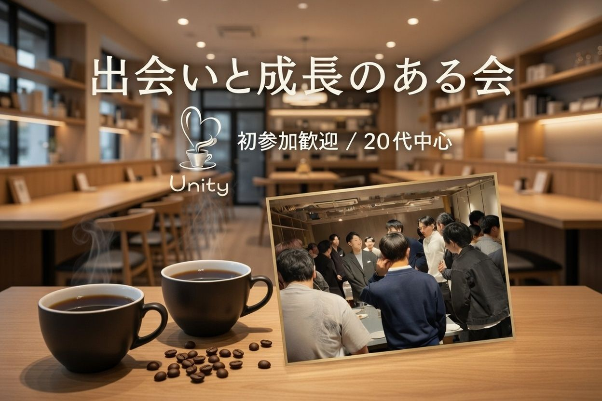

Cafe
カフェ会
気になるお店に集まって、他愛のない話をするだけの時間。それでも、いちばん人が近づく瞬間だったりします。
Concept
何をやるかより、誰と楽しむか。
Unityは、ただイベントに参加するだけの場所ではありません。
新しい人と出会い、一緒に笑って、新しいことに挑戦して、少しずつ成長していく。そんな時間をつくるコミュニティです。
肩書きでも実績でもなく、人そのもので繋がることを大切にしています。

What We Do

Cafe
気になるお店に集まって、他愛のない話をするだけの時間。それでも、いちばん人が近づく瞬間だったりします。

Futsal
初めての人も、久しぶりの人も。汗をかいたぶんだけ、距離が縮まる夜。

Mixer
初参加でも、自然に輪の中へ。気づけば知らない人がひとり減っている、そんな夜です。

Book Club
それぞれの一冊を持ち寄って。静かな時間の中にも、ちゃんと会話が生まれます。
How to Join
Instagramやこのサイトで、Unityの空気感をのぞいてみてください。
Tunagateのコミュニティページから、参加したいイベントをチェック。
一人参加がほとんど。緊張しなくて大丈夫です。
開催頻度
月 1〜3回
参加は自由。自分のペースで関われます。
開催エリア
主に東京
参加者の多くが東京在住・在勤です。
参加費
実費のみ
月会費などは一切いただいていません。
Community
一人で参加しても、大丈夫。
初参加でも、自然に会話がうまれる。
気づけば、また会いたくなる。
Voices
最初は緊張していたけど、気がついたら全員と普通に話していた。こんなにナチュラルに馴染めたコミュニティは初めてです。
グルメ探訪のイベントで出会った人が、今では大切な友人に。「食」って、こんなに人を繋げるんだと実感しました。
フットサルの後にみんなでご飯に行くのが毎回の楽しみ。仕事でも刺激をくれる人たちと過ごすと「もっと頑張ろう」と思えます。
Gallery
Philosophy
Organizers
代表
福島 → 東京 Fukushima → Tokyo
代表として「お互いを高め合える関係性」を大切にしています。食で人は繋がれる、と信じて年間300軒を巡り続けています。次はぜひ一緒に。
メンバー
埼玉 → 東京 Saitama → Tokyo
「全員が楽しめる場所をつくりたい」という想いでUnityを支えています。誰もが自然体でいられる、そんな居場所を目指しています。
メンバー
群馬 → 東京 Gunma → Tokyo
コードを書く日も、花を活ける夕方も、音楽に浸る週末も。どんな自分でいていい、そう思えるコミュニティを一緒に育てています。
Q&A
20代であること、それだけ。経歴や職種は関係ありません。「人と繋がりたい」気持ちだけで十分です。
月1〜3回ペース。参加は自由で、無理なく自分のペースで関わることができます。
主に東京エリアで開催。参加者の多くが東京在住・在勤で、都内の話題のスポットを中心に活動しています。